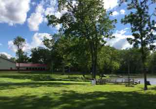
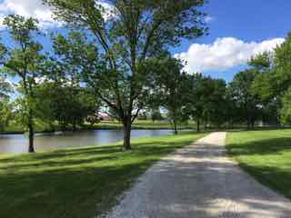
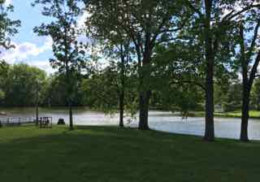

Link Here to read more about Healing Hearts Camps
  This is the project for my course in Web Design. I took a study break to help my friends Melissa and Scott with their Healing Hearts Camp. Here are a few highlights!
Start with something they know, that was the advice. So "You Are My Sunshine" was practiced after setting the table and was sung for the parents after we cheered them on in their entrance to the dining hall. Fortunately for Joe, Fawn, Ansley, and I, we had some strong singers in the bunch and, in particular, siblings who had already been to camp twice! They knew everything, of course, but we put on a good show of knowing what we were doing, even if it wasn't always musical!
Since Joe is a great drummer, we tried to add some rhythm to our camp song, "Arms" which Ansley played on the guitar. Since we had lots of time on Wednesday and Thursday, we attempted a shorter, rhythmic version of "You Are So Beautiful" which Nancy likes so much in her end-of-week video production. We hoped they would deliver a sweet rendition to their parents when we returned them after the parents' special dinner. The lyrics are simple enough, but there was only so much of that beautiful melody line to be compromised for easier singing! Joe and I finally went back to teaching the camp song which, surprisingly, seemed much easier for the children after this other attempt, go figure.
The children delivered a tear-jerking performance of the camp song Thursday to start off the "Talent" show and again before the Parent Coronation on Saturday. There were sweet smiles, hands on hearts, and loving looks all around. Good memories for these hard-working parents to take home with them for getting through the next challenges!